CUDA 12.8 安装指南¶
作者：胡樾 | 记录时间：2026-02-23
环境信息
- 操作系统：Windows 11
- GPU：NVIDIA GeForce RTX 4060 Laptop GPU
- 目标 CUDA 版本：12.8
- 安装日期：2026-02-23
目录¶
- 第一步：确认自己的 GPU 硬件
- 第二步：确认 GPU 支持的 CUDA 版本
- 第三步：卸载旧版 CUDA（如有）
- 第四步：安装 / 更新 NVIDIA 显卡驱动
- 第五步：安装 CUDA Toolkit 12.8
- 第六步：安装 cuDNN
- 第七步：验证安装
- 附录：常见问题
1. 确认自己的 GPU 硬件¶
安装 CUDA 的第一步，是搞清楚自己电脑里装的是什么 GPU。不同的 GPU 支持的 CUDA 版本不同，搞错了后面全白忙。
1.1 方法一：任务管理器查看（最简单）¶
- 按
Ctrl + Shift + Esc打开 任务管理器 - 点击顶部 性能 标签
- 在左侧列表中找到 GPU（可能有 GPU 0、GPU 1 两个，一个是核显一个是独显）
- 点击独显（通常是 GPU 1），右上角会显示 GPU 型号，例如：NVIDIA GeForce RTX 4060 Laptop GPU
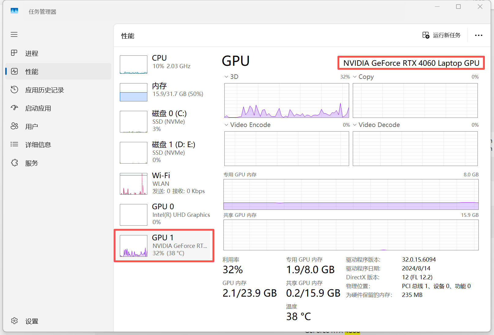
1.2 方法二：设备管理器查看¶
- 右键 开始菜单（或按
Win + X）→ 选择 设备管理器 - 展开 显示适配器
- 可以看到所有 GPU 设备，例如：
- Intel(R) UHD Graphics（核显）
- NVIDIA GeForce RTX 4060 Laptop GPU（独显）
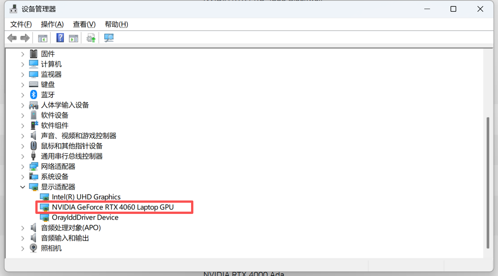
1.3 方法三：命令行查看¶
打开命令提示符（Win + R → 输入 cmd → 回车），执行：
在输出表格中可以看到 GPU 型号。如果该命令报错 'nvidia-smi' 不是内部或外部命令，说明 NVIDIA 驱动尚未安装，先用方法一或方法二确认 GPU 型号。
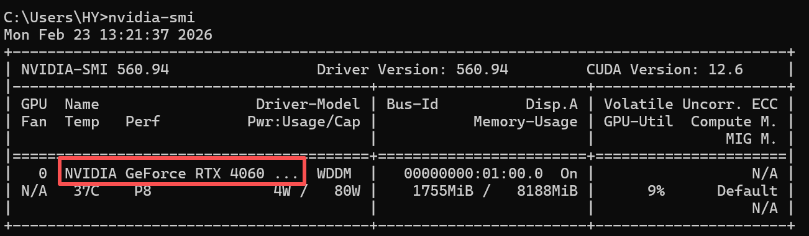
1.4 方法四：DirectX 诊断工具¶
- 按
Win + R，输入dxdiag，回车 - 切换到 显示（Display） 或 呈现（Render） 标签
- 设备名称处会显示 GPU 型号
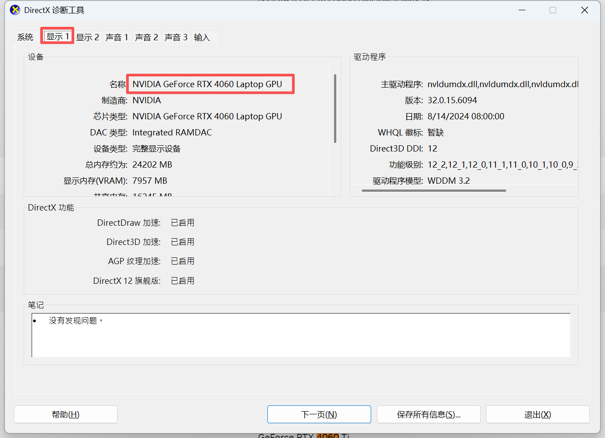
💡 桌面显卡 vs 笔记本显卡：名称中带 Laptop 的是笔记本版本，性能和功耗与桌面版有差异，但 CUDA 安装流程一致。
2. 确认 GPU 支持的 CUDA 版本¶
确认了 GPU 型号之后，需要确认它的 计算能力（Compute Capability） 和 当前驱动版本 是否满足 CUDA 12.8 的要求。
2.1 查看 GPU 计算能力¶
CUDA 对 GPU 有最低计算能力要求。怎么查这个要求？
第一步：查你的 GPU 计算能力是多少
打开 NVIDIA 官方计算能力查询页面：
在页面中找到你的 GPU 型号，对应的 Compute Capability 就是计算能力。
GeForce RTX 4060 Laptop GPU 属于 Ada Lovelace 架构，计算能力为 8.9。

第二步：查 CUDA 12.8 要求的最低计算能力
打开 CUDA Toolkit Release Notes：
https://docs.nvidia.com/cuda/cuda-toolkit-release-notes/index.html
在页面中找到 「CUDA 12.8」 对应的条目，查看 「Supported GPUs」 或 「GPU Supported」 部分，会列出支持的最低计算能力。
CUDA 12.8 要求 GPU 计算能力 ≥ 5.0，RTX 4060（8.9）完全满足。
💡 简单记忆：常见显卡计算能力参考：
GPU 系列 架构 计算能力 GTX 10×× Pascal 6.1 RTX 20×× Turing 7.5 RTX 30×× Ampere 8.6 RTX 40×× Ada Lovelace 8.9
2.2 查看当前驱动版本与 CUDA Driver 版本¶
打开命令提示符（Win + R → 输入 cmd → 回车），执行：
输出示例：
+-----------------------------------------------------------------------------------------+
| NVIDIA-SMI 5xx.xx Driver Version: 5xx.xx CUDA Version: 12.x |
|--------------------------------------------+--------------------------------------------+
| GPU Name | Bus-Id | GPU-Util Compute M. |
| 0 NVIDIA GeForce RTX 4060 Laptop GPU | ... | ... |
+--------------------------------------------+--------------------------------------------+
关注两个信息：
| 字段 | 含义 |
|---|---|
| Driver Version | 当前已安装的 NVIDIA 驱动版本 |
| CUDA Version | 该驱动 最高支持 的 CUDA 版本（不等于已安装的 CUDA Toolkit 版本） |
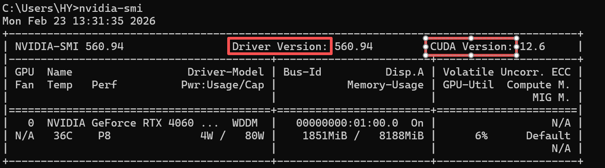
2.3 CUDA 12.8 对驱动版本的要求¶
如何查看 CUDA 12.8 需要什么版本的驱动？
打开 NVIDIA 官方的 CUDA Toolkit Release Notes 页面：
https://docs.nvidia.com/cuda/cuda-toolkit-release-notes/index.html
在页面中找到 「Table 3. CUDA Toolkit and Minimum Required Driver Version for CUDA Minor Version Compatibility」（或类似标题的表格），找到 CUDA 12.8 对应的行：
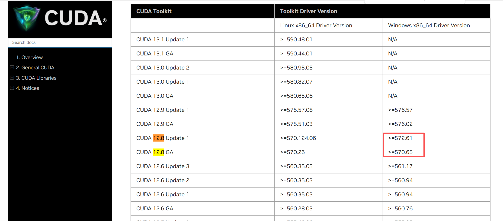
根据 NVIDIA 官方文档，CUDA 12.8 要求的最低驱动版本如下：
| 操作系统 | 最低驱动版本 |
|---|---|
| Windows | ≥ 570.17 |
| Linux | ≥ 570.86.15 |
官方对照表：https://docs.nvidia.com/cuda/cuda-toolkit-release-notes/index.html
如果你的 nvidia-smi 显示的 Driver Version 低于上表要求，需要先更新驱动（见第二步）。
如果显示的 CUDA Version ≥ 12.8，说明驱动已满足要求，可以跳到第五步。
3. 卸载旧版 CUDA（如有）¶
如果你的电脑之前安装过旧版本的 CUDA（如 11.8、12.1 等），建议在安装新版之前先处理一下。
3.1 检查是否已安装旧版 CUDA¶
打开命令提示符，执行：
如果输出中显示了 CUDA 版本号（如 release 11.8），说明已有旧版安装。
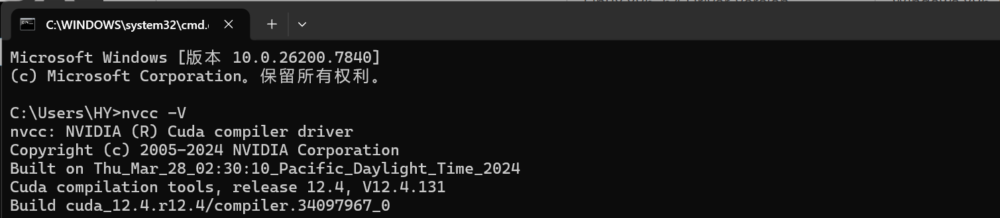
也可以检查目录是否存在：
如果存在 v11.8、v12.1 等文件夹，说明安装了旧版 CUDA。
3.2 是否需要卸载旧版？¶
| 情况 | 建议 |
|---|---|
| 只用最新版 CUDA，不需要旧版 | ✅ 建议卸载，节省磁盘空间，避免环境变量冲突 |
| 某些项目依赖旧版 CUDA（如 PyTorch 只支持 11.8） | ⚠️ 可以保留，多版本可以共存，通过切换环境变量使用 |
| 不确定 | 建议先卸载，需要时再装回来 |
💡 多版本 CUDA 可以共存。每个版本装在独立目录下（如
v11.8、v12.8），通过修改CUDA_PATH和Path环境变量来切换。但如果你不需要旧版，卸载更干净。
3.3 卸载旧版 CUDA 的方法¶
方法一：通过「设置」卸载（推荐）¶
- 按
Win + I打开 设置 - 进入 应用 → 已安装的应用（或「应用和功能」）
- 在搜索框中输入
CUDA - 会看到类似以下条目（版本号可能不同）：
- NVIDIA CUDA Development 11.8
- NVIDIA CUDA Documentation 11.8
- NVIDIA CUDA Runtime 11.8
- NVIDIA CUDA Visual Studio Integration 11.8
- ...
- 逐个点击 → 卸载
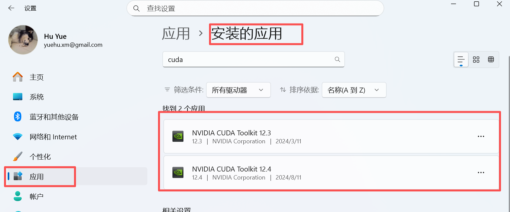
⚠️ 注意：只卸载带有旧版本号的 CUDA 组件，不要卸载 NVIDIA 显卡驱动（
NVIDIA Graphics Driver）和NVIDIA PhysX等其他 NVIDIA 组件。
方法二：通过控制面板卸载¶
- 按
Win + R，输入appwiz.cpl，回车 - 在程序列表中找到所有带
NVIDIA CUDA字样且版本号为旧版的条目 - 右键 → 卸载
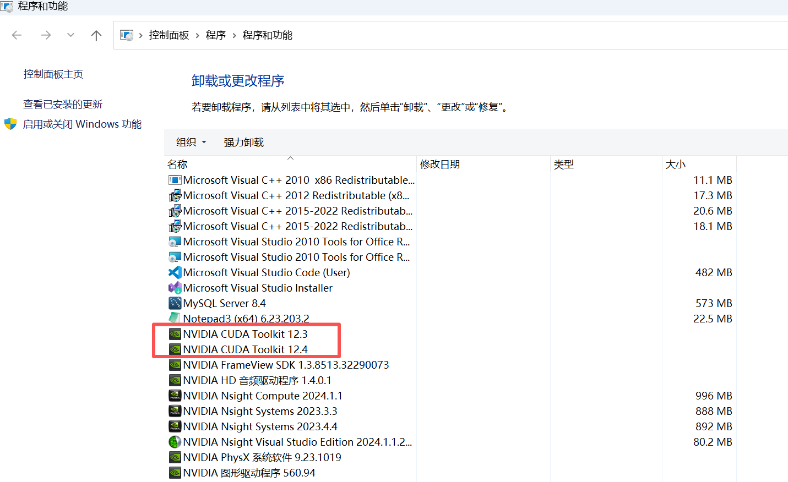
3.4 清理残留（可选）¶
卸载完成后，可以手动检查并清理：
- 删除旧版 CUDA 目录（如果还存在）：
# 查看还有哪些版本目录
dir "C:\Program Files\NVIDIA GPU Computing Toolkit\CUDA"
# 如果旧版目录还在，手动删除（需要管理员权限）
# 例如删除 v11.8：
rmdir /s /q "C:\Program Files\NVIDIA GPU Computing Toolkit\CUDA\v11.8"
- 清理环境变量：
- 右键 此电脑 → 属性 → 高级系统设置 → 环境变量
- 在 系统变量 中删除旧版相关变量（如
CUDA_PATH_V11_8） - 在
Path中删除旧版路径（如包含v11.8的路径）
- 清理临时文件（可选）：
3.5 卸载后验证¶
如果提示 'nvcc' 不是内部或外部命令，说明旧版 CUDA 已成功卸载。
该命令应该仍然正常工作（因为只卸载了 CUDA Toolkit，没有卸载驱动）。
4. 安装 / 更新 NVIDIA 显卡驱动¶
4.1 下载驱动¶
打开 NVIDIA 驱动下载页面：
https://www.nvidia.com/Download/index.aspx https://www.nvidia.cn/drivers/lookup/
按照以下参数选择：
| 参数 | 选择 |
|---|---|
| 产品类型 | GeForce |
| 产品系列 | GeForce RTX 40 Series (Notebooks) |
| 产品 | GeForce RTX 4060 Laptop GPU |
| 操作系统 | Windows 11 64-bit |
| 下载类型 | Game Ready 驱动程序（GRD）或 Studio 驱动程序（SD） |
| 语言 | Chinese (Simplified) |
点击 搜索 → 下载。
GRD vs SD： - Game Ready 驱动（GRD）：适合游戏玩家，更新频率高 - Studio 驱动（SD）：适合创作者/开发者，稳定性更好
做深度学习建议选择 Studio 驱动。
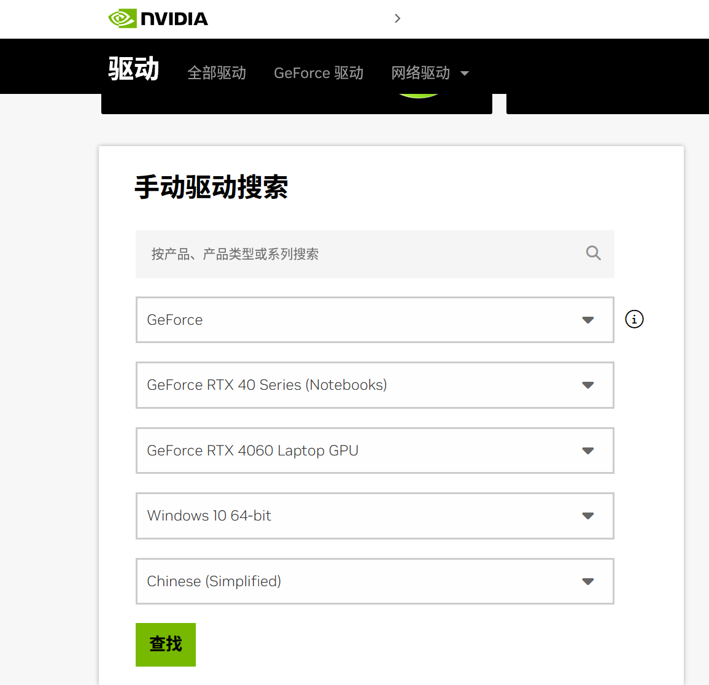
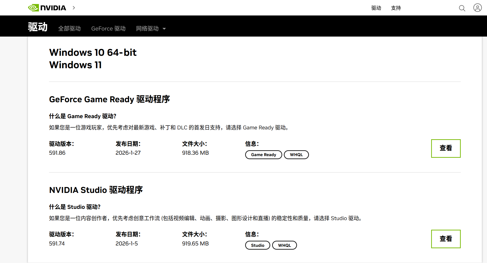
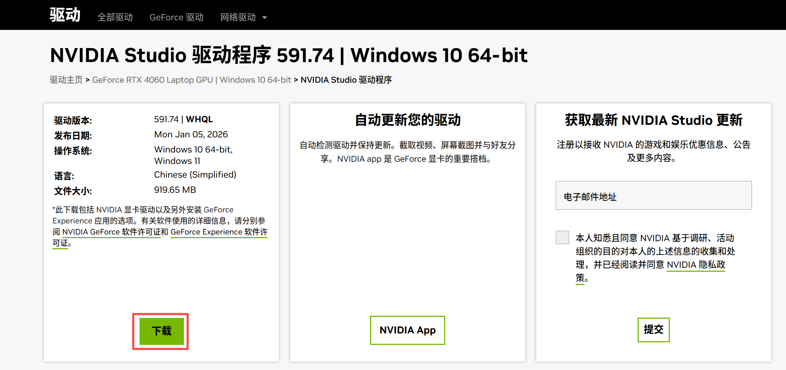
4.2 安装驱动¶
-
双击下载好的驱动安装包（如
591.74-notebook-win10-win11-64bit-international-nsd-dch-whql.exe） -
选择解压临时目录（默认即可），等待解压
-
进入 NVIDIA 安装程序 - 系统检查 界面，会让你选择安装模式：
| 选项 | 包含内容 | 适合场景 |
|---|---|---|
| NVIDIA 显卡驱动程序 和 NVIDIA App | 显卡驱动 + NVIDIA App（原 GeForce Experience 的替代品） | 需要驱动自动更新、游戏优化、屏幕录制、性能监控等功能 |
| NVIDIA 图形驱动程序 | 仅显卡驱动，不附带任何额外软件 | 只需要驱动本身，追求干净/最小化安装 |
两者的核心区别：
- NVIDIA App 是 NVIDIA 新推出的管理工具（取代了旧版的 GeForce Experience），提供：
- 驱动自动更新通知
- 游戏内性能叠加层（FPS 显示等）
- ShadowPlay 屏幕录制
- 游戏画质自动优化
GPU 性能监控
NVIDIA 图形驱动程序 只安装纯驱动，没有任何附加软件，安装体积更小。
💡 做深度学习建议选择「NVIDIA 图形驱动程序」（仅驱动），因为不需要游戏相关功能，纯驱动更干净、占资源更少。如果你平时还用这台电脑打游戏，可以选带 NVIDIA App 的选项。
- 选择后进入下一步，选择 自定义安装
- 勾选 执行清洁安装（推荐，会清除旧驱动配置）
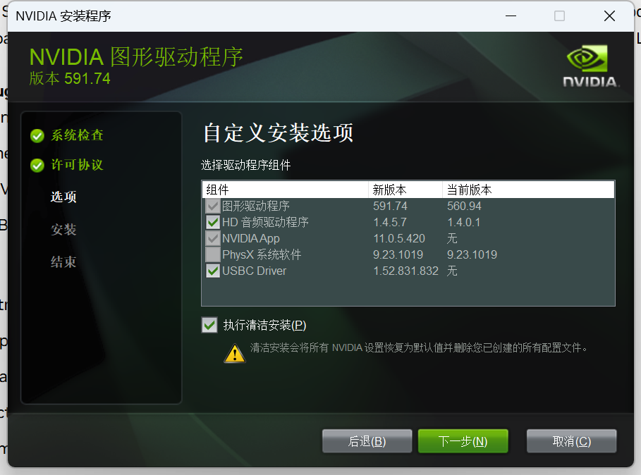
6. 点击 下一步 等待安装完成 7. 安装完成后 重启电脑- 重启后系统会弹出 NVIDIA App 提示，要求选择偏好的驱动程序类型：
| 选项 | 适合人群 | 特点 |
|---|---|---|
| Game Ready 驱动程序 | 游戏玩家 | 针对最新游戏做 Day-0 优化，更新频繁，侧重游戏性能和兼容性 |
| NVIDIA Studio 驱动程序 | 创作者 / 开发者 | 针对创意应用和 AI/ML 框架做稳定性测试，更新节奏较慢但更稳定 |
💡 做 PyTorch 开发选 「NVIDIA Studio 驱动程序」。
理由： - Studio 驱动经过更严格的稳定性测试，长时间训练模型不容易出问题 - 对 CUDA、cuDNN、TensorRT 等 AI 工具链的兼容性验证更充分 - 偶尔玩游戏完全不受影响——两者底层驱动相同，游戏性能差异几乎可忽略 - 更新频率低 = 更少的「驱动更新后环境炸了」风险
如果哪天想切换，可以随时在 NVIDIA App 的设置中更改驱动偏好，无需重装。
- 选择完驱动类型后，NVIDIA App 会询问是否开启 驱动自动更新：
💡 建议关闭驱动自动更新。
理由： - 深度学习环境对驱动版本敏感，自动更新可能导致 CUDA / cuDNN / PyTorch 兼容性问题 - 训练到一半驱动悄悄更新重启，后果不堪设想 - 手动更新更可控——确认新驱动与当前 CUDA 版本兼容后再更新
在弹出的提示中直接点击 关闭 或 跳过 即可。
如果已经点了开启，或者后续想确认是否已关闭，可以手动设置：
在 NVIDIA App 中关闭自动更新的方法：
- 打开 NVIDIA App（任务栏右下角系统托盘中的 NVIDIA 图标，右键 → 打开 NVIDIA App）
- 点击右上角的 ⚙ 设置（齿轮图标）
- 在左侧菜单中选择 「常规」
- 找到 「自动下载驱动更新」 或 「驱动程序更新」 选项
- 将开关切换为 关闭
也可以同时关闭 「桌面通知」 中驱动更新相关的通知，避免弹窗打扰。
额外建议：禁止 Windows Update 自动更新 NVIDIA 驱动
Windows Update 有时也会偷偷更新显卡驱动。如果想彻底防止驱动被自动更新：
- 按
Win + R，输入sysdm.cpl，回车 - 切换到 「硬件」 标签 → 点击 「设备安装设置」
- 选择 「否（你的设备可能无法按预期工作）」
- 点击 保存更改
⚠️ 这会阻止 Windows Update 自动安装所有硬件驱动（不仅是 GPU），如果你其他硬件需要自动更新驱动，可以不改这一步，只关闭 NVIDIA App 内的自动更新即可。
- 接下来会弹出 「优化游戏及创意应用程序」 提示，询问是否让 NVIDIA App 自动优化已安装的游戏和创意应用的设置：
💡 建议选择「否」/ 跳过 / 关闭。
这个功能的作用是让 NVIDIA App 扫描你电脑上的游戏和创意软件，然后自动调整它们的图形设置（分辨率、画质等）。
不建议开启的理由： - 主要用途是 PyTorch 开发，不需要游戏画质自动优化 - 该功能会在后台扫描磁盘、占用资源 - 偶尔打游戏时自己手动调画质更靠谱
跳过即可，不影响任何驱动功能和 CUDA 使用。
- 接下来会询问是否启用 「NVIDIA 信息浮窗」（NVIDIA Overlay / 性能叠加层）：
💡 建议关闭。
这个浮窗的作用是在屏幕角落实时显示 GPU 温度、频率、FPS、功耗等信息（类似游戏中的性能监控 HUD），通常用
Alt + R快捷键呼出。不建议开启的理由： - 做 PyTorch 开发时不需要屏幕上叠一层性能信息 - 浮窗服务常驻后台，占用少量 GPU 和系统资源 - 偶尔打游戏想看帧率时，可以随时在 NVIDIA App 中手动开启
直接选择 关闭 / 跳过 即可。
4.3 验证驱动安装¶
重启后打开命令提示符，再次执行：
实际输出：
+-----------------------------------------------------------------------------------------+
| NVIDIA-SMI 591.74 Driver Version: 591.74 CUDA Version: 13.1 |
+-----------------------------------------+------------------------+----------------------+
| GPU Name Driver-Model | Bus-Id Disp.A | Volatile Uncorr. ECC |
| Fan Temp Perf Pwr:Usage/Cap | Memory-Usage | GPU-Util Compute M. |
|=========================================+========================+======================|
| 0 NVIDIA GeForce RTX 4060 ... WDDM | 00000000:01:00.0 On | N/A |
| N/A 38C P5 7W / 80W | 782MiB / 8188MiB | 8% Default |
+-----------------------------------------+------------------------+----------------------+
确认：
- Driver Version = 591.74 ≥ 570.17 ✅
- CUDA Version 显示 13.1 ✅
⚠️ 为什么 CUDA Version 显示 13.1 而不是 12.8？
nvidia-smi显示的 CUDA Version 是该驱动 最高支持 的 CUDA 版本，不是 你实际安装的 CUDA Toolkit 版本。
- 驱动 591.74 最高支持到 CUDA 13.1，说明它**向下兼容** CUDA 12.8、12.6、11.8 等所有更低版本
- 实际安装的 CUDA Toolkit 版本要用
nvcc -V查看（在第五步安装完 CUDA Toolkit 后才能用）- 只要
nvidia-smi的 CUDA Version ≥ 你要安装的 CUDA Toolkit 版本（12.8），就没问题简单理解：驱动说「我最高能跑 13.1」，你装 12.8 当然没问题。详见附录 Q1。
4.4 GPU 使用进程说明¶
在 nvidia-smi 输出的底部 Processes 部分，会列出当前使用 GPU 的进程。以本次安装为例：
| 进程 | 说明 | 能否禁止 |
|---|---|---|
FlClash.exe |
FlClash 代理/VPN 工具（用于科学上网） | ✅ 可以关闭。不需要时退出即可，与 GPU 计算无关 |
StartMenuExperienceHost.exe |
Windows 开始菜单 渲染进程 | ❌ 系统进程，不要动 |
explorer.exe |
Windows 资源管理器（桌面 + 任务栏） | ❌ 系统核心进程，不要动 |
SearchHost.exe |
Windows 搜索栏 UI 进程 | ⚠️ 系统进程，可禁用 Windows 搜索功能但不建议 |
MessageCenterUI.exe |
华为电脑管家 消息中心通知 | ✅ 可以关闭。在华为电脑管家设置中关闭通知，或退出电脑管家 |
HwMdcUI.exe |
华为电脑管家 主界面进程 | ✅ 可以关闭。不需要华为电脑管家时可以退出或禁止开机启动 |
WindowsTerminal.exe |
Windows 终端（你正在用的命令行窗口） | ❌ 你正在用它，关了就没命令行了 |
TextInputHost.exe |
Windows 输入法 渲染进程（emoji 面板、输入候选框等） | ❌ 系统进程，不要动 |
Code.exe |
VS Code 编辑器 | ✅ 可以关闭。不用时退出即可，VS Code 使用 GPU 做 UI 渲染加速 |
💡 这些进程占用的 GPU 显存很少（总共约 782MiB，大部分是 Windows 桌面合成器 DWM 的开销），不影响后续 CUDA / PyTorch 的使用。
真正需要关注的是：跑 PyTorch 训练时如果 GPU 显存不够（RTX 4060 只有 8GB），可以： - 关闭不需要的应用（特别是浏览器、VS Code 等） - 关闭华为电脑管家（
MessageCenterUI.exe+HwMdcUI.exe） - 减小 batch size类型列中的 C+G 表示该进程同时使用 Compute（计算）和 Graphics（图形）资源，这些基本都是 GUI 应用的正常 GPU 加速渲染，不是在做 CUDA 计算。
5. 安装 CUDA Toolkit 12.8¶
5.1 下载 CUDA Toolkit¶
打开 CUDA Toolkit 下载页面：
按以下参数选择：
| 参数 | 选择 |
|---|---|
| Operating System | Windows |
| Architecture | x86_64 |
| Version | 11 |
| Installer Type | exe (local)（推荐，完整离线安装包约 3GB） |
exe (local)和exe (network)的区别： - local：完整离线安装包，下载后无需联网即可安装（推荐） - network：在线安装包，安装时需要联网下载组件
点击 Download 下载安装包。

5.2 安装 CUDA Toolkit¶
- 双击下载好的安装包（如
cuda_12.8.0_571.96_windows.exe）
⚠️ 注意：双击后可能会弹出提示：
「您正在安装老版本的驱动程序，系统可在计算机定位或未定位时安装新版本的驱动程序。是否要继续？」
这是因为 CUDA 12.8 安装包自带的驱动版本是 571.96，而你在第四步已经手动安装了更新的驱动 591.74。
点击「是」继续即可——这个提示只是警告安装包内捆绑的驱动比较旧，后面在组件选择界面我们会 取消勾选 Driver components，不会真的把驱动降级回去。
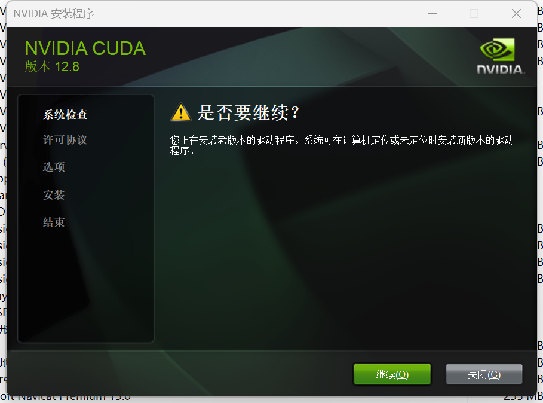
- 选择解压临时目录（默认即可），等待解压完成
- 在 NVIDIA 安装程序界面，选择 同意并继续
- 选择 自定义（高级） 安装
- 在组件选择界面，各组件说明如下：
CUDA 分类下的子组件：
| 子组件 | 是否勾选 | 说明 |
|---|---|---|
| Development | ✅ 必选 | CUDA 开发工具（编译器 nvcc、头文件、库文件等），PyTorch 运行也依赖这些 |
| Runtime | ✅ 必选 | CUDA 运行时库（cudart 等），没有它 CUDA 程序跑不起来 |
| Documentation | ❌ 不选 | 本地离线文档，几百MB，需要时直接看在线文档更方便 |
| Nsight Compute | ❌ 不选 | GPU 内核级性能分析 工具，分析 CUDA kernel 的执行效率。写 CUDA C++ 才用得上，纯 PyTorch 用不到 |
| Nsight Systems | ❌ 不选 | GPU 系统级性能分析 工具，分析 CPU-GPU 协作、时间线、瓶颈等。同样是 CUDA C++ 高级优化工具 |
| Nsight VSE | ❌ 不选 | Nsight Visual Studio Edition，在 Visual Studio 中调试 CUDA 代码。不用 VS 写 CUDA 就不需要 |
| Visual Studio Integration | ❌ 不选 | 将 CUDA 编译支持集成进 Visual Studio 项目。不用 VS 开发 CUDA C++ 就不需要 |
Driver components 分类：
| 子组件 | 是否勾选 | 说明 |
|---|---|---|
| Display Driver | ❌ 不选 | CUDA 安装包自带的驱动是 571.96，比你已安装的 591.74 旧，勾选会**降级驱动** |
Other components 分类：
| 子组件 | 是否勾选 | 说明 |
|---|---|---|
| CUDA Samples | 可选 | 官方示例代码，方便验证安装（deviceQuery.exe 等 demo 在这里） |
| Demo Suite | 可选 | 包含 deviceQuery.exe、bandwidthTest.exe 等验证工具。建议勾选，装完可以验证 |
| Other | ❌ 不选 | 其他杂项组件，通常不需要 |
NVIDIA App components 分类：
| 子组件 | 是否勾选 | 说明 |
|---|---|---|
| NVIDIA App | ❌ 不选 | 你在第四步装驱动时已经安装了 NVIDIA App，无需重复安装。而且 CUDA 包里的版本可能更旧 |
💡 总结：做 PyTorch 开发的最小安装勾选
- ✅ CUDA → Development
- ✅ CUDA → Runtime
- ✅ Other components → Demo Suite（用于安装后验证，可选）
- ❌ 其余全部取消勾选
这样安装体积最小、最干净，PyTorch 需要的一切都包含在 Development + Runtime 中。
- 安装路径保持默认：
- 点击 下一步 开始安装，等待安装完成
- 安装完成，点击 关闭
5.3 确认环境变量¶
CUDA 安装完成后，安装程序会自动添加环境变量。手动确认一下：
- 右键 此电脑 → 属性 → 高级系统设置 → 环境变量
- 在 系统变量 中检查是否存在：
| 变量名 | 变量值 |
|---|---|
CUDA_PATH |
C:\Program Files\NVIDIA GPU Computing Toolkit\CUDA\v12.8 |
CUDA_PATH_V12_8 |
C:\Program Files\NVIDIA GPU Computing Toolkit\CUDA\v12.8 |
- 在 系统变量 的
Path中检查是否包含：
C:\Program Files\NVIDIA GPU Computing Toolkit\CUDA\v12.8\bin
C:\Program Files\NVIDIA GPU Computing Toolkit\CUDA\v12.8\libnvvp
如果没有，手动添加上述路径。
5.4 验证 CUDA 安装¶
打开 新的 命令提示符窗口（环境变量需要重新加载），执行：
输出示例：
nvcc: NVIDIA (R) Cuda compiler driver
Copyright (c) 2005-2024 NVIDIA Corporation
Built on ...
Cuda compilation tools, release 12.8, V12.8.xxx
看到 release 12.8 表示 CUDA Toolkit 安装成功。
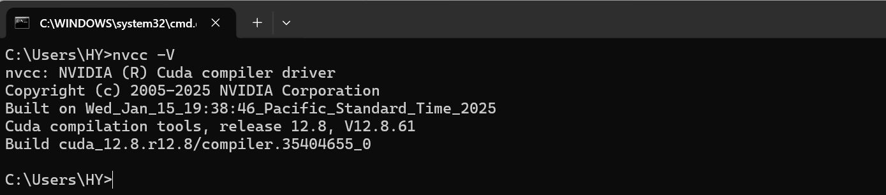
6. 安装 cuDNN¶
cuDNN 是 NVIDIA 提供的深度神经网络加速库，PyTorch / TensorFlow 等框架都依赖它。
6.1 下载 cuDNN¶
打开 cuDNN 下载页面：
需要 登录 NVIDIA 开发者账号（免费注册）。
页面默认显示最新版（如 cuDNN 9.19.0 Downloads），按以下参数逐步选择：
| 参数 | 选择 |
|---|---|
| Operating System | Windows |
| Architecture | x86_64 |
| Version | 11（即 Windows 11） |
| Installer Type | exe (Local)（唯一选项） |
💡 Version 选项对应的是 Windows 版本（如 10、11、2025 Server 等），选择你的操作系统版本即可。
点击 Download 下载安装包（如 cudnn_9.19.0_windows_x86_64.exe）。
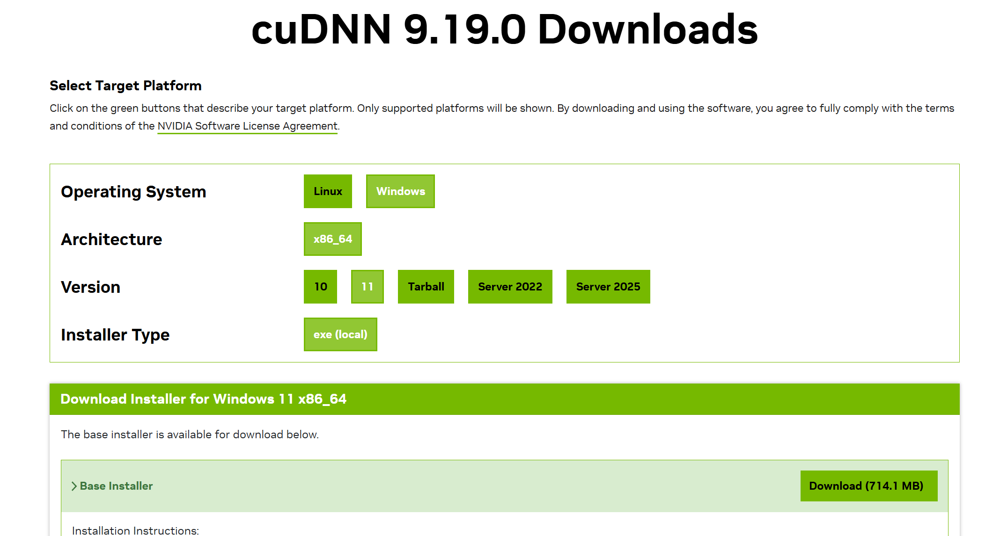
6.2 安装 cuDNN¶
- 双击运行
cudnn_9.19.0_windows_x86_64.exe - 同意许可协议，选择 自定义安装
- 在组件选择界面，会看到以下组件：
cuDNN for CUDA cuda13.1 分类：
| 子组件 | 是否勾选 | 说明 |
|---|---|---|
| Development | ❌ 不选 | 你没有安装 CUDA 13.1，勾选了也没用 |
| Runtime | ❌ 不选 | 同上 |
| cuDNN Samples (Samples) | ❌ 不选 | CUDA 13.1 的示例代码，不需要 |
cuDNN for CUDA cuda12.9 分类：
| 子组件 | 是否勾选 | 说明 |
|---|---|---|
| Development | ✅ 必选 | cuDNN 头文件和库文件，PyTorch 编译/运行需要 |
| Runtime | ✅ 必选 | cuDNN 运行时 DLL，没有它 PyTorch 用不了 cuDNN 加速 |
💡 为什么选 CUDA 12.9 而不是 13.1？
- 你安装的 CUDA Toolkit 是 12.8，属于 CUDA 12.x 系列
- cuDNN 的 CUDA 12.9 分类兼容整个 CUDA 12.x 系列（12.0~12.9），所以选 12.9 的组件就对了
- CUDA 13.1 分类是给未来 CUDA 13.x 用的，你没装 CUDA 13 就不需要
总结：只勾选 「cuDNN for CUDA cuda12.9」下的 Development + Runtime，其余全部取消。
- 安装路径保持默认（安装程序会自动识别 CUDA 目录），点击 下一步
- 等待安装完成，点击 关闭
6.3 添加环境变量（如需要）¶
确认系统 Path 中包含 cuDNN 的路径（通常 CUDA 的 bin 路径已包含，无需额外添加）：
如果使用了 CUPTI，还需添加：
7. 验证安装¶
7.1 命令行验证汇总¶
打开一个 新的 命令提示符，逐条执行以下命令：
# 查看驱动版本和 CUDA Driver 版本
nvidia-smi
# 查看 CUDA Toolkit 版本
nvcc -V
# 运行官方 demo 验证
cd "C:\Program Files\NVIDIA GPU Computing Toolkit\CUDA\v12.8\extras\demo_suite"
deviceQuery.exe
bandwidthTest.exe
7.2 Python 验证（PyTorch）¶
如果你使用 PyTorch，可以用以下代码验证 GPU 是否可用：
import torch
print(f"PyTorch 版本: {torch.__version__}")
print(f"CUDA 是否可用: {torch.cuda.is_available()}")
print(f"CUDA 版本: {torch.version.cuda}")
print(f"cuDNN 版本: {torch.backends.cudnn.version()}")
print(f"GPU 名称: {torch.cuda.get_device_name(0)}")
print(f"GPU 数量: {torch.cuda.device_count()}")
预期输出：
PyTorch 版本: 2.x.x
CUDA 是否可用: True
CUDA 版本: 12.8
cuDNN 版本: 90xxx
GPU 名称: NVIDIA GeForce RTX 4060 Laptop GPU
GPU 数量: 1
⚠️ 注意：PyTorch 需要安装与 CUDA 12.8 匹配的版本。安装命令参考：
最新安装命令请查看：https://pytorch.org/get-started/locally/
7.3 Python 验证（TensorFlow）¶
import tensorflow as tf
print(f"TensorFlow 版本: {tf.__version__}")
print(f"GPU 设备: {tf.config.list_physical_devices('GPU')}")
8. 附录：常见问题¶
Q1：nvidia-smi 显示的 CUDA Version 和 nvcc -V 显示的不一样？¶
这是正常的。
nvidia-smi显示的是 驱动支持的最高 CUDA 版本（CUDA Driver API 版本）nvcc -V显示的是 实际安装的 CUDA Toolkit 版本（CUDA Runtime API 版本）
只要 Driver 版本 ≥ Runtime 版本即可正常使用。
Q2：可以同时安装多个版本的 CUDA 吗？¶
可以。每个 CUDA 版本会安装在独立目录下（如 v11.8、v12.8），通过修改环境变量 CUDA_PATH 和 Path 来切换当前使用的版本。
Q3：安装 CUDA 后 nvcc 命令找不到？¶
- 检查环境变量
Path中是否包含C:\Program Files\NVIDIA GPU Computing Toolkit\CUDA\v12.8\bin - 需要重新打开命令提示符窗口，环境变量修改后不会自动刷新已打开的窗口
Q4：cuDNN 版本怎么选？¶
选择与 CUDA 12.x 兼容的最新版 cuDNN 即可。cuDNN 的页面会标明适配的 CUDA 版本。
Q5：CUDA 安装过程中提示 Visual Studio 未安装？¶
这是可选提示。如果你不需要用 Visual Studio 编译 CUDA C++ 代码（只用 Python 跑深度学习），可以忽略此警告，安装会正常完成。
Q6：RTX 4060 Laptop GPU 的主要参数¶
| 参数 | 值 |
|---|---|
| 架构 | Ada Lovelace |
| 计算能力 | 8.9 |
| CUDA 核心数 | 3072 |
| 显存 | 8 GB GDDR6 |
| 显存位宽 | 128-bit |
| 最大功耗 | 35-115W（取决于笔记本设计） |